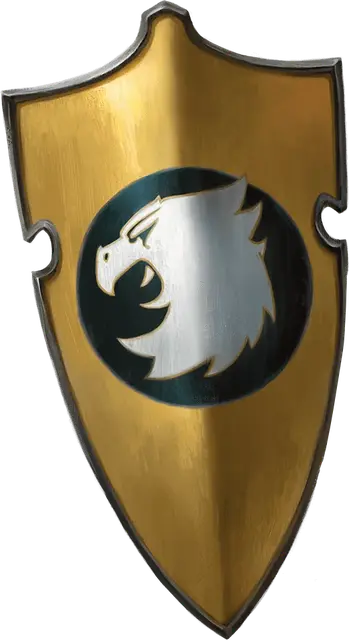

Щит рыцаря
Shield of the Cavalier
Доспех (Щит), очень редкий (требуется настройка)

Рекомендованная стоимость 40 000 ЗМ
Пока вы держите этот Щит, вы получаете бонус +2 к Классу Защиты. Этот бонус добавляется к обычному бонусу Щита к Классу Защиты.
Щит также обладает следующими свойствами, которые вы можете использовать, пока держите его.
Силовой удар. Когда вы совершаете действие Атака, вы можете совершить один бросок атаки этим щитом по цели в пределах 5 футов от вас, применяя к броску ваши Бонус владения и модификатор Силы. При попадании щит наносит цели Силовой урон в размере 2к6 + 2 плюс ваш модификатор Силы, и если цель — существо, вы можете отбросить её на 10 футов по прямой от себя; если размер этого существа не больше вашего размера, вы можете также сбить его с ног, причиняя состояние Опрокинутый.
Защитное поле. Когда вы или видимый вами в пределах 5 футов от вас союзник становитесь целью атаки или совершаете спасбросок против области воздействия, вы можете Реакцией использовать Щит, чтобы создать неподвижную 5-футовую Эманацию, исходящую от вас. Когда эта Эманация появляется, каждое существо или объект, не полностью находящиеся внутри неё, выталкиваются в ближайшее незанятое пространство снаружи. Атака или область воздействия, вызвавшие эту Реакцию, не оказывают эффекта на существ и объекты внутри Эманации. Эффект длится, пока вы поддерживаете Концентрацию на нём, но не дольше 1 минуты. Ничто не может проникнуть внутрь Эманации или из неё. Существо или объект внутри Эманации не может получить урон от исходящих снаружи атак и эффектов, как и существо внутри Эманации не может нанести урон чему-либо снаружи. Как только это свойство использовано, оно не может быть использовано снова до следующего рассвета.